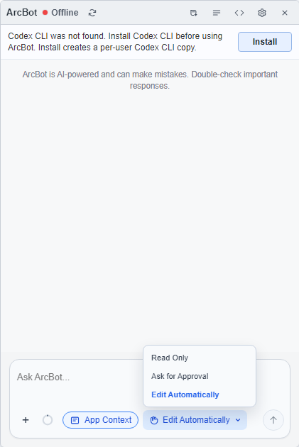

ArcBot
Ask about the work you have open
Use App Context to connect your question to the current page, and choose how proposed edits should be handled.
Open ArcBot with the Right Context
- Open the demo project and select Commercial Auto → All States → CH02 → Comprehensive on the Project Page.
- Open the dataset or method you want to discuss and make its window active.
- Click the ArcBot launcher. If it is hidden, restore it from View → Show AI Bot Icon.
- Keep App Context enabled and inspect its context information before sending the question.

Ask a Focused Review Question
- Choose Read Only from Mode for an explanation.
- Enter a specific request, such as: “Explain the selected factors in this DFM and identify origin periods I should inspect.”
- Choose Send and read the response alongside the actual grid and notes.
- Use a follow-up question to clarify a particular origin or factor instead of asking ArcBot to infer which result you mean.
The screenshot shows the interaction controls. Your response depends on the current method and question; check numerical claims against the displayed results.
Review a Proposed Change
Ask for Approval lets you inspect a proposed DFM edit before accepting it. Compare the suggested change with your review intent. Edit Automatically applies supported edits to the originating page; inspect the result and its save state after the change.
Use Revert the latest ArcBot edit when available to undo that latest change. For an Arcode notebook or JSON editor, the applied edit remains an unsaved editor change until you save it.
Manage the Chat and Connection
Use New chat for a different task and Chat history to return to an earlier conversation. The settings control provides Model, Reasoning, and login information.
If the panel shows Offline and asks you to Install, Sign in, or Repair, complete the indicated setup before sending a question, then use Refresh status. Select from the models actually offered by the panel.
For script editing, continue to Arcode. For server or dataset problems, see Troubleshooting.